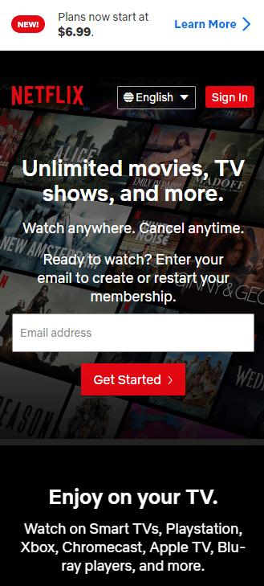
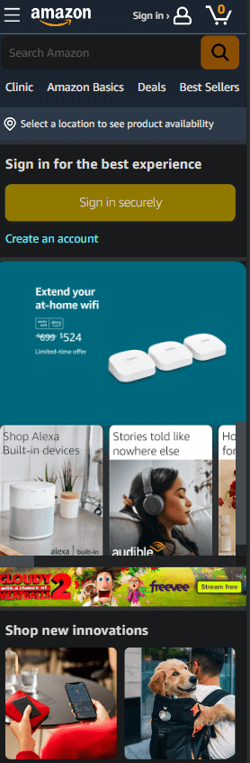
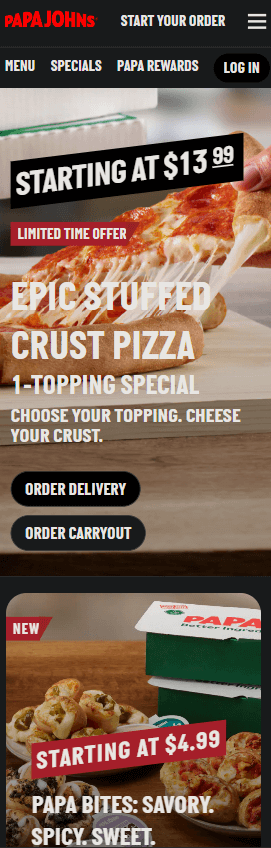

Design Principles
Stephen Port
Visual Hierarchy
Netflix (https://www.netflix.com)

Visual Hierarchy: Arranging graphic elements by order of importance. Users will most likely read "Unlimited movies, TV, shows and more" first before reading other parts of the page.
Alignment
Amazon (https://www.amazon.com)

Alignment: Every visual element, whether it's a picture, text, or icon, on the page has a connection to at least one other element. Images are different sizes, though they are aligned carefully as to convey connection and organization
Repetition
Papa Johns (https://www.papajohns.com)

Repetition: The text size, fonts, colors, and graphics all remain the same throughout the site. There's a consistent shown throughout the layout